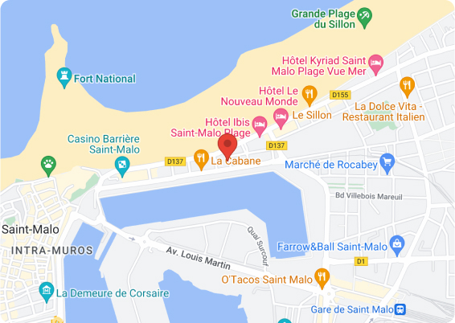
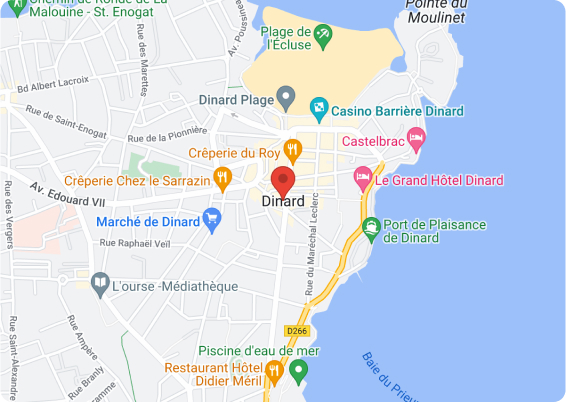

Me Contacter
Me laisser un message
Je vous accueille à St-Malo et à Dinard
Tel : 06 85 94 35 48
Prendre rendez-vous en ligne
4 rue du Pont 35400 Saint-Malo
Les lundi, mardi, jeudi et vendredi
2 rue du Tertre 35800 Dinard
Les mercredi et un samedi sur deux
